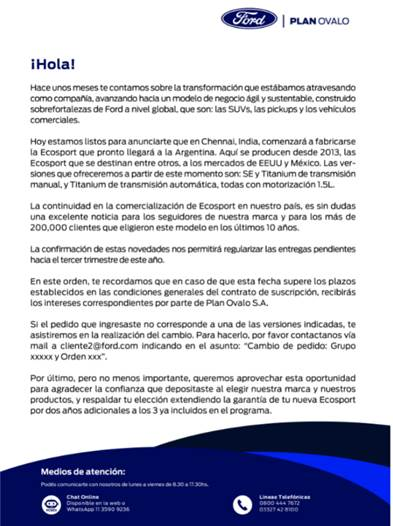
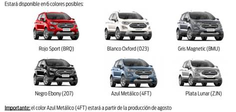
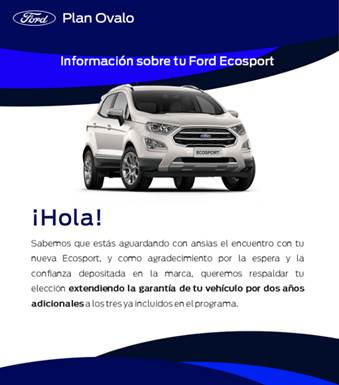
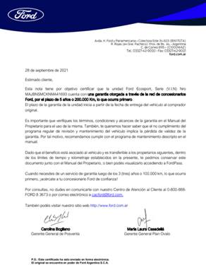

En enero de 2021 Ford anunció que cerraba sus plantas de Brasil. Esta medida afectó a los clientes de Ecosport tomando en cuenta que esta se fabricaba en Brasil.
Los clientes pudieron ingresar pedido por una de estas unidades debido a que la misma provendría de un mercado alternativo
En el mes de Julio se envió la siguiente comunicación a todos los clientes que tenían un pedido ingresado a ese momento

¡Puntos importantes!
o Debido al cese de fabricación del modelo en Brasil, las nuevas unidades provendrán desde la India.
o Los catálogos que se continuarán fabricando son
o SE 1.5 Manual
o Titanium 1.5 Manual
o
Titanium
1.5 Automática
Las especificaciones de cada modelo disponibles en
https://www.ford.com.ar/crossovers-suvs-4x4/nueva-ecosport/?intcmp=hm-pusuvs-ecosport
o Se puso a disposición del equipo una base con los pedidos ingresados con un mensaje asociado al modelo pedido, el mail al cual le enviamos la comunicación (desde ovalo2@ford.com) y el catálogo que solicitó.
o Posibles situaciones
o Si el cliente desea dar de baja su pedido, debe enviar Carta Documento a Plan Ovalo informando la baja del mismo y continuar abonando su plan en calidad de ahorrista
o Tomarse el tiempo de dejar la anotación lo más extendida posible para poder mapear las diferentes situaciones que les presenten los clientes.
o La fecha de pedido no se altera si decide cambiar de catálogo (se toma para el cálculo de intereses en la demora)
o El plazo estimado de entrega (el USO de condicional es mandatorio) está pautado para el tercer trimestre del año
o Para estos casos, tal como se está haciendo ahora, se le abonarán intereses establecidos en las Condiciones Generales de contratación.
o La garantía se extenderá por 2 años
o El VM será muy similar al de los modelos que actualmente comercializamos
o Los clientes a los que no vamos a poder asignar una unidad fueron de los cumplir el pedido, fueron:
o Freestyle
o Titanium 2.0 automática
o SE automática
o A los mencionados en el punto anterior, se le requirió que envíen la solicitud de modificación de cambio del catálogo a cliente2@ford.com
o Se modificó el catálogo de colores. Se contactó mediante el concesionario a los clientes para que modifiquen el color en caso que no esté disponible el solicitado
o Anteriores:
o HKQ: Cobre andino
o HCS: Azul Belice
o Actuales
o 023, Blanco Oxford (023)
o 207, Negro Ebony (207)
o 4FT, Azul metálico (HCS)
o BMU, Gris magnético ¡NEW!
o BRQ, Rojo Sport (PWA)
o ZJN, Plata Lunar (APF)

En el mes de septiembre se comenzó a regularizar la asignación de unidades a los pedidos con mayor antigüedad y se comenzaron a facturar las primeras Ecosport.
En el momento de la entrega de la unidad, se le entregará al cliente la documentación de garantía extendida. Se envió esta comunicación a los clientes
 
Ford
anuncio que cesará la fabricación de vehículos en India.
La planta de Chennai, la cual abastece EcoSport para el mercado argentino,
continuará la fabricación de vehículos para los mercados de exportación.
Aquellos clientes que quieran ingresar un pedido o licitar podrán realizarlo
debido a que tenemos previsto poder cumplir con nuestras obligaciones.
Posibles preguntas:
o
Los
planes de ahorro serán cancelados y las cuotas devueltas tal como sucedió con
Ka
No tenemos prevista la devolución de fondos como el Ka. Seguiremos
cumpliendo con las condiciones establecidas en el contrato hasta tanto haya
unidades en existencia.
o
Repregunta
por plazos ciertos (tomando en cuenta los 7 años del plan)
Nos encontramos trabajando en los mecanismos para poder atender a cada caso
en particular.
o
¿El
modelo será exportado desde otro mercado alternativo?
No, la producción en la planta de India continuará y se está implementando
un programa de producción para asegurar el volumen necesario para abastecer la
demanda.
o
¿Hasta
cuándo se seguirán suscribiendo planes de ahorro?
La suscripción de nuevos contratos de planes de EcoSport continúa. La fecha
en que cesará la suscripción de nuevos contratos de planes de ahorro para
EcoSport hasta octubre.